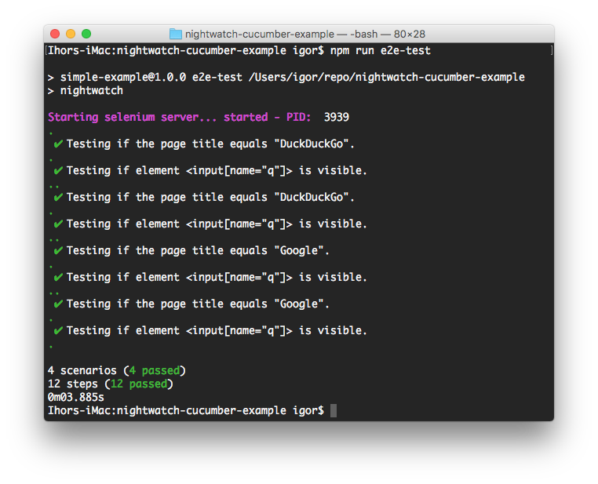
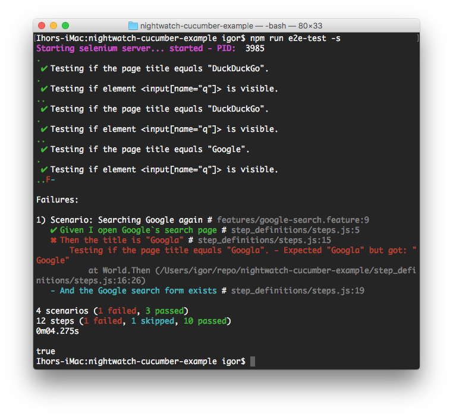
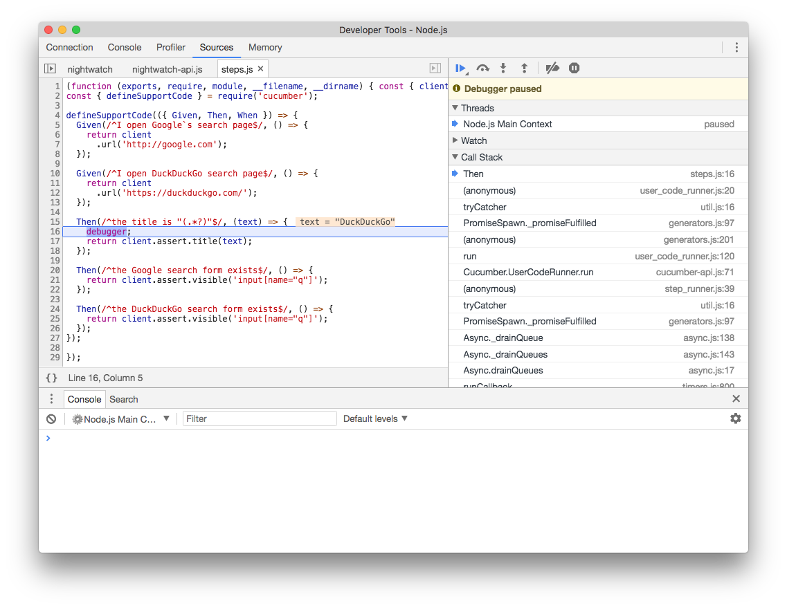
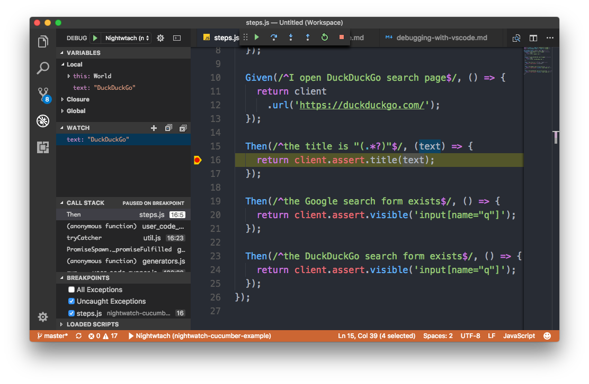

️ THIS PACKAGE IS DEPRECATED
This package is deprecated in favour of my newer packages nightwatch-api and w3c-webdriver
Intro
Getting Started
Step 1
First you need to have Nightwatch.js and Cucumber.js to be installed locally.
$ npm install --save-dev nightwatch cucumber
or shorter
$ npm i -D nightwatch cucumber
If you are new to Nightwatch.js you can read the developer guide.
Step 2
Install nightwatch-cucumber
$ npm install --save-dev nightwatch-cucumber
or shorter
$ npm i -D nightwatch-cucumber
Step 3
In project root create a JavaScript configuration file for Nightwatch.js. Use nightwatch.conf.js instead of nightwatch.json. More details You don't need to specify src_folders.
// nightwatch.conf.js
module.exports = {
...
}
Step 4
Require nightwatch-cucumber at the top of the configuration file.
// nightwatch.conf.js
require('nightwatch-cucumber')({
/* other configuration options */
})
module.exports = {
...
}
For more examples check out the example repository or the examples folder
Step 5
Add an npm script to your package.json. This will make the test execution more convenient.
You can choose any name for it.
// package.json
{
...
"scripts": {
"e2e-test": "nightwatch",
...
}
...
}
Step 6
Run the tests by executing.
npm run e2e-test

Demo Test
By default feature files are located in features folder. You can change this using configuration object.
# features/google.feature
Feature: Google Search
Scenario: Searching Google
Given I open Google's search page
Then the title is "Google"
And the Google search form exists
Step definitions files are located in features/step_definitions folder by default.
// features/step_definitions/google.js
const { client } = require('nightwatch-cucumber');
const { Given, Then, When } = require('cucumber');
Given(/^I open Google's search page$/, () => {
return client
.url('http://google.com')
.waitForElementVisible('body', 1000);
});
Then(/^the title is "([^"]*)"$/, (title) => {
return client.assert.title(title);
});
Then(/^the Google search form exists$/, () => {
return client.assert.visible('input[name="q"]');
});
For more examples check out the example repository or the examples folder
Step definition handling
Step definitons which uses Nightwatch client should return the result of api call as it returns a Promise. Please note that this behaviour is different from plain Nightwatch client API.
Running tests
Error handling

Executing individual feature files or scenarios
Single feature file
npm run e2e-test -- features/google-search.feature
or
npm run e2e-test -- features/google-search
Multiple feature files
npm run e2e-test -- features/google-search features/duckduckgo-search
Single feature file and one folder
npm run e2e-test -- features/google/google-search features/duckduckgo
Single scenario by its line number
npm run e2e-test -- features/google-search.feature:11
Feature Groups
You can selectively run features based on groups. To group features together just place them in the same sub-folder. The folder name is the name of the group.
You can use Nightwatch CLI --group, --skipgroup flags. More details
npm run e2e-test -- --group google
Feature and Scenario Tags
You can selectively run features and scenarios based on tags. More details
# google.feature
@google
Feature: Google Search
@search
Scenario: Searching Google
Given I open Google's search page
Then the title is "Google"
And the Google search form exists
npm run e2e-test -- --tag google
or for more matches
npm run e2e-test -- --tag google --tag yahoo
You can also skip features based on tags
npm run e2e-test -- --skiptags google
or for skipping multiple tags
npm run e2e-test -- --skiptags google,yahoo
and all together :)
npm run e2e-test -- --tag google --tag yahoo --skiptags search,login
Supported Nightwatch command line options
| Name | Shortname | Supported | Default | Description |
|---|---|---|---|---|
--config |
-c |
./nightwatch.conf.js | The location of the nightwatch.conf.js file - the configuration file which the Nightwatch uses and which also includes the Selenium WebDriver options. | |
--output |
-o |
tests_output The location where the JUnit XML reports will be saved. Use CucumberJS --format <TYPE[:PATH]> instead |
||
--reporter |
-r |
junit | Name of a predefined reporter (e.g. junit) or path to a custom reporter file to use. Use CucumberJS --format <TYPE[:PATH]> instead |
|
--env |
-e |
default | Which testing environment to use - defined in nightwatch.conf.js | |
--verbose |
Shows extended selenium command logging during the session | |||
--version |
-v |
Shows the version number | ||
--test |
-t |
Runs only the specified feature file. By default the runner will attempt to run all feature files. | ||
--testcase |
Used only together with --test. Runs the specified testcase from the current suite/module. | |||
--group |
-g |
Runs only the specified group of tests (subfolder). Tests are grouped by being placed in the same subfolder. | ||
--skipgroup |
-s |
Skip one or several (comma separated) group of tests. | ||
--filter |
-f |
Specify a filter (glob expression) as the file name format to use when loading the test files. | ||
--tag |
-a |
Filter test modules by tags. Only tests that have the specified tags will be loaded. | ||
--skiptags |
Skips tests that have the specified tag or tags (comma separated). | |||
--retries |
Retries failed or errored testcases up to the specified number of times. Retrying a testcase will also retry the beforeEach and afterEach hooks, if any. | |||
--suiteRetries |
Retries failed or errored testsuites (test modules) up to the specified number of times. Retrying a testsuite will also retry the before and after hooks (in addition to the global beforeEach and afterEach respectively), if any are defined on the testsuite. |
Parallel execution
For speeding up the execution of tests you can run them parallely. Here is an example Nightwatch configuration file. More details.
// nightwatch.conf.js
require('nightwatch-cucumber')({
...
})
module.exports = {
"test_workers": true,
...
}

Programmatical execution
You can execute tests using the following programmatical API
const nightwatch = require('nightwatch')
nightwatch.runner({
_: [], // Run single feature file
config: 'nightwatch.conf.js',
env: 'default',
filter: '',
tag: ''
}, () => {
console.log('done');
})
Grunt support
For running test using Grunt task runner you can use the following Gruntfile.js as template. More details
// Gruntfile.js
const nightwatch = require('nightwatch')
module.exports = (grunt) => {
grunt.initConfig({
nightwatch: {
'default': {
argv: {}
}
}
})
nightwatch.initGrunt(grunt)
grunt.registerTask('default', ['nightwatch'])
}
Example apps
Simple example application
This example repository demonstrates a simple project which is using Nightwatch-Cucumber for E2E testing.

Async await example application
This example repository demonstrates a project which is using Nightwatch-Cucumber for E2E testing. It is using async await, Babel and ES6 imports.
Debugging
Debugging with Chrome DevTools
Chrome DevTools has a very good integration with latest Node.js versions (8-9)
Here’s how to set up a debugging sesssion.
1. Add a new npm script to you project
"scripts": {
...
"e2e-debug": "node --inspect node_modules/nightwatch/bin/nightwatch"
},
2. Set a breakpoint in you step definitions or support code (Using debugger statement)
Then(/^the title is "(.*?)"$/, (text) => {
debugger;
return client.assert.title(text);
});
3. Open about:inspect in Chrome

4. Click the Open dedicated DevTools for Node link.

5. Run the e2e-debug npm script
npm run e2e-debug
yarn e2e-debug
The debugging session should stop the execution on the debugger statement you set.

6. Close the dedicated DevTools for Node to stop debugging session.
Debugging with Visual Studio Code
Visual Studio Code provides good debugging capabilities for Node.js
Here’s how to set up a debugging sesssion.
1. Add the following configuration to your project launch.json
{
...
"configurations": [
...
{
"type": "node",
"request": "launch",
"name": "Nightwtach",
"program": "${workspaceRoot}/node_modules/nightwatch/bin/nightwatch",
"args": []
}
]
}
2. Set a breakpoint in your step definitions or support code
3. Start debugging using the newly created launch configuration

For more details read the VSCode documentation
Configuration
Cucumber output
From version 3.0.0 of Cucumber.js the pretty formatter has been removed. The default formatter is the dot fromatter. To get back the original output you can use the cucumber-pretty package.
npm install cucumber-pretty --save-dev
Include the --format node_modules/cucumber-pretty command line arguments in nightwatch.conf.js
// nightwatch.conf.js
require('nightwatch-cucumber')({
cucumberArgs: [
'--format', 'node_modules/cucumber-pretty',
'features'
]
})
module.exports = {
...
}

Nightwatch output
By default every passed Nightwatch assertion fill log a message on output. To disable that set nightwatchOutput: false in configuration object.
// nightwatch.conf.js
require('nightwatch-cucumber')({
...
nightwatchOutput: false
})
module.exports = {
...
}
Passing additional CLI options for Cucumber.js.
For that you can use the cucumberArgs configuration property. For available Cucumber.js CLI options see the Cucumber.js docs
// nightwatch.conf.js
require('nightwatch-cucumber')({
cucumberArgs: [
'--require', 'hooks.js',
'--require', 'features/step_definitions',
'--format-options', '{"colorsEnabled":false}',
'features'
]
})
module.exports = {
...
}
The default configuration object is.
{
cucumberArgs: [
'--require', 'features/step_definitions',
'--format', 'json:reports/cucumber.json',
'features'
],
nightwatchOutput: true
}
Timeouts
The Cucumber timeouts are disabled entirely. So for timeouts you can use only Nightwatch request_timeout_options.
Hooks
Hooks can be provided using Cucumber.js support files. Support files are specified using supportFiles configuration option.
More details
For more examples check out the examples folder
// nightwatch.conf.js
require('nightwatch-cucumber')({
cucumberArgs: [
'--require', 'hooks.js',
'--require', 'features/step_definitions',
'features'
]
})
module.exports = {
...
}
// hooks.js
const { Before, After } = require('cucumber');
Before(() => new Promise(resolve => {
console.log('Before start');
setTimeout(() => {
console.log('Before end');
resolve();
}, 1000);
}));
After(() => new Promise(resolve => {
console.log('After start');
setTimeout(() => {
console.log('After end');
resolve();
}, 1000);
}));
Patterns
Session handling
If you test a site which uses cookies, localStorage or sessionStorage its a good practise to clear them after each test case. Not doing so will make the test cases not isolated. Which can lead to not reliable, failing test where would be very hard to find the root cause of the issue. Creating a new webdriver session for every test case is not necessary. A proper cleanup and page refresh should be sufficient in most cases. As starter you can use the following support code.
const { client } = require('nightwatch-cucumber');
const { After } = require('cucumber');
After(() => client.execute(`
localStorage.clear();
sessionStorage.clear();
`).deleteCookies().refresh());
Feature background
You can use feature background to avoid copying and pasting of steps. The background runs before each scenario after beforeScenario hooks.
Feature: Feature background example
Background:
Given there are 10 cucumbers
Scenario: eating
When I eat 3 cucumbers
Then I should have 7 cucumbers
Scenario: adding
When I add 1 cucumbers
Then I should have 11 cucumbers
Scenario Outlines
You can use scenario outlines to avoid copying and pasting of scenarios.
Scenario Outline: eating
Given there are <start> cucumbers
When I eat <eat> cucumbers
Then I should have <left> cucumbers
Examples:
| start | eat | left |
| 12 | 5 | 7 |
| 20 | 5 | 15 |
Page Objects
For making your tests more readable and maintainable you can use the Page Object pattern. Nightwatch reads the page objects from the folder (or folders) specified in the page_objects_path configuration property. More details. Add the following line to Nightwatch.js configuration file.
// nightwatch.conf.js
require('nightwatch-cucumber')({
/* configuration */
})
module.exports = {
page_objects_path: 'page-objects',
...
}
//page-objects/yahoo.js
module.exports = {
url: 'http://yahoo.com',
elements: {
body: 'body',
searchBar: 'input[name="p"]'
}
}
Now we can use page objects from step definitions
//step-definitions/yahoo.js
const { client } = require('nightwatch-cucumber');
const { Given, Then, When } = require('cucumber');
Given(/^I open Yahoo's search page$/, () => {
const yahoo = client.page.yahoo();
return yahoo
.navigate()
.waitForElementVisible('@body', 1000);
});
Then(/^the Yahoo search form exists$/, () => {
const yahoo = client.page.yahoo();
return yahoo.assert.visible('@searchBar');
});
Advanced features
Babel support
You can write tests using latest ECMAScript features using Babel. Using async function is especially useful.
For that you need install babel-core, setup .babelrc and add Babel as require-module
// nightwatch.conf.js
require('nightwatch-cucumber')({
cucumberArgs: ['--require-module', 'babel-core/register', '--require', 'features/step_definitions', 'features']
})
...
// features/step_definitions/google.js
import { client } from 'nightwatch-cucumber';
import { Given, Then, When } from 'cucumber';
Given(/^I open Google's search page$/, async () => {
await client.url('http://google.com')
await client.waitForElementVisible('body', 1000);
});
Then(/^the title is "([^"]*)"$/, async (title) => {
await client.assert.title(title);
});
Then(/^the Google search form exists$/, async () => {
await client.assert.visible('input[name="q"]');
});
For complete working example check out the examples folder
Screenshots
You can enable screenshot generation on step failure using following Nightwatch configuration
module.exports = {
test_settings: {
default: {
screenshots : {
enabled : true,
on_failure : true,
path: 'screenshots/default'
},
...
}
},
...
}
HTML reports
You can create HTML reports using cucumber-html-reporter
As input you need to provide a Cucumber JSON report generated by this package. You have to run the report generation in a separate NodeJs process. An example package.json could be the following.
{
...
"scripts": {
"e2e": "npm-run-all e2e-test e2e-report --continue-on-error",
"e2e-test": "nightwatch",
"e2e-report": "node create-html-report.js",
...
}
...
}
This example is using the npm-run-all package which is capable to run multiple npm-scripts sequential and works cross platform.

JUnit XML reports
You can create JUnit XML reports using cucumber-junit As input you need to provide a Cucumber JSON report generated by this package.
Languages
You can use different language in feature files. For setting the language you need to add language comment at the top of the feature file.
#language: pt
Funcionalidade: Pesquisa Google
Cenário: Pesquisando no Google
Dado que eu abrir a página de pesquisa do Google
Em seguida, o título é "Google"
E o formulário de busca Google existe
Creating dynamic sections
You can create sections dynamically by using the modified Nightwatch Section
constructor exported by Nightwatch Cucumber. Consider the following example
using nightwatch to test Wikipedia.
//page-objects/wikipedia.js
const { Section } = require('nightwatch-cucumber')
module.exports = {
url: 'https://en.wikipedia.org/wiki/Cucumber_(software)',
elements: {
toc: 'div#toc'
},
commands: [{
getHeading: function(heading) {
const props = {
parent: this,
selector: `//h2/*[text()="${heading}"]/..`,
using: 'xpath',
elements: {
editLink: {
selector: '//*[@class="mw-editsection"]//a[text()="edit"]',
locateStrategy: 'xpath'
}
},
commands: [{
verifyEditSection: function() {
return Promise.resolve(true);
}
}]
}
return new Section(props);
},
getSectionTitles: function() {
return Promise.resolve([/* MAGIC! */]);
}
}]
}
Now we can use the getHeading command to test each of the edit links to ensure
that they edit the appropriate section.
//step-definitions/yahoo.js
const { client } = require('nightwatch-cucumber');
const { Given, Then, When } = require('cucumber');
const wikipedia = client.page.wikipedia();
Given(/^I open each section's edit link$/, () => {
wikipedia.navigate();
return Promise.all(
wikipedia.getSectionTitles()
.map((title) => wikipedia.getHeading(title).verifyEditSection())
);
});
The advantage of creating sections of the fly like this that your page object code can be much DRYer, especially when there are many similar objects on the page that you want to test.
Contributors
Contributions of any kind welcome! Thanks goes to these wonderful people:
-
Igor Muchychka
-
Igor Zalutski
-
Daniele Campogiani
-
Simranjeet Singh
-
Shashi Shekhar Singh
-
jbblanchet
-
Vincent Spiewak
-
Fabio Quinzi
-
Jeffrey Effendy
-
Lawrence
-
Domenico Gemoli
-
Klokov Anton
-
Arnaud gueras
-
Lukas Eipert
-
Paulo
-
Tylor Steinberger
-
Eric Chan
-
Mykolas
-
Jon Wallsten
-
Julien Viala
-
dmerc
-
Millenium
-
Aaron Goshine
-
marikaner
-
kerimov asif
-
Evgeniy Vasilev
-
Alasdair Murdock
-
Clay Reimann
Change log
See releases
License
This software is released under the terms of the MIT license.